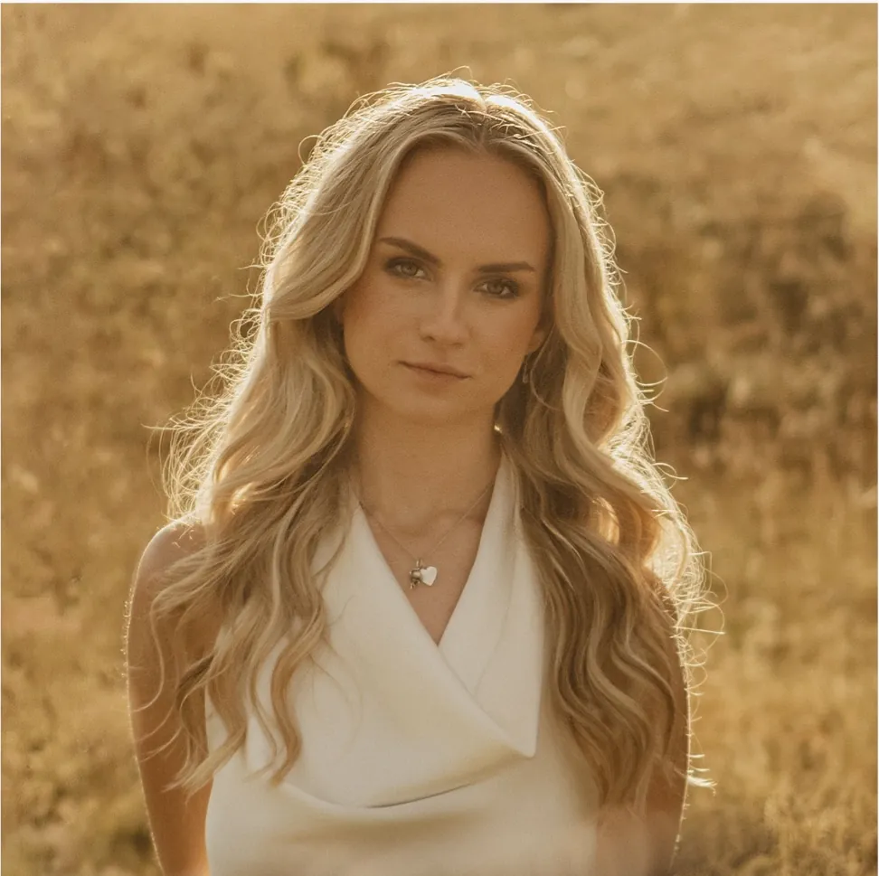

Kateřina Fikarová, grafika, brand a sociální sítě.

Baví mě propojovat svět lidí, značek a vizuální komunikace. Ráda tvořím věci, které nejen dobře vypadají, ale mají především smysl a dokážou předat tu správnou emoci.
Věřím, že ten nejlepší design nevzniká v izolaci u stolu, ale rodí se ze skvělé týmové práce, otevřené diskuse a schopnosti naslouchat.
Moje cesta k designu začala přirozenou touhou vyprávět příběhy. Dnes se pohybuju na pomezí grafiky, brand strategie a video produkce. Jsem tak trochu „Ferda mravenec“: baví mě být u projektu od prvního nápadu až po finální realizaci. Ať už navrhuju identitu značky, vymýšlím kampaň, nebo se postavím před kameru jako moderátorka, vždycky do toho dávám maximum.
Ke každému projektu přistupuju s energií a důrazem na detail. Záleží mi na tom, aby výsledek přirozeně rezonoval s lidmi, pro které je určený.
Praxe
- 2026–dosud
Social Media Content Manager
Kreativní Kancl - 2026
Externistka: koncepty a kreativní strategie
Czech Promotion - 2025–2026
Koordinační podpora ČT24 Akademie
Česká televizeVizuální identita a kompletní správa instagramového profilu @akademie_ct24.
- 2025–2026
Specialistka HR marketingu
Česká televizeGrafika, video a obsah pro Kariéru ČT na @ceskatelevize_kariera.
- 2023–2024
Editorka on-line obsahu
Referralio Media - 2022–2024
Junior grafická návrhářka
Státní tiskárna cenin
Co umím
- Brand identity
- Grafický design
- Brand strategie
- Sociální sítě
- Koncept a kampaň
- UX/UI design
- Focení a natáčení
- Střih videa
- Copywriting
- Moderování
- Photoshop
- Illustrator
- Figma
Ocenění
- POPAI Student Award 2026Vítězky kategorie Grafický 2D návrh s projektem Na zdraví, Smíchove pro Pivovary Staropramen.
- Topgal XVítězný koncept sub-brandu v soutěži VŠKK × Czech Promotion × Topgal. Dnes v prodeji. Projekt
- Padel LeagueVítězný návrh workshopu VŠKK, aplikace se bude reálně vyvíjet. Projekt
Studium
- Vysoká škola kreativní komunikaceGrafický a mediální design, Praha.
- Erasmus+: Design Week, Kolding, DánskoKvěten 2026, IBA Erhvervsakademi Kolding. Týden design thinkingu v mezinárodním týmu nad zadáním pro LEGO Group, s návštěvou LEGO House. Příspěvek
Výstavy
- POPAI DAY 2026, O2 universumPlakát Na zdraví, Smíchove a slavnostní vyhlášení, 19. 11. 2026.
- Hala Masarykova nádražíPadel League, podzim 2026.
- NáplavKKa 2026, Rašínovo nábřežíPadel League, do 12. 10. 2026.
- Výstava VŠKK, Masarykovo nádražíTopgal X a kampaň pro knižní veletrh ve Frankfurtu, jaro 2026.